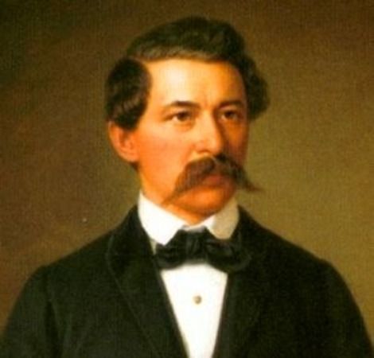

Arany János: Ágnes Asszony
- Arany életútja
- Bevezető
- Életrajzi állomások
- Arany költészetének jellemzői
- Ágnes Asszony bemutatása
- A történet röviden
- Főbb szereplők és konfliktus
- Balladai sajátosságok
- Saját értelmezés
- Interaktív elemek
- Léptető
- Kvízjáték
Arany Életútja
Bevezető

Arany János (1817–1882) a magyar irodalom egyik legnagyobb költője, a 19. század epikus költészetének mestere. Legfontosabb műfajai az elbeszélő költemény (Toldi), a ballada és a lélektani költemény. Pályája során a parasztfiúból akadémiai titkár lett. Költészetét a népi hagyomány és a klasszikus műveltség együttese jellemzi. Balladáiban a bűn, a bűnhődés, a lelkiismeret és az erkölcsi felelősség kérdéseit tárgyalja.
Életrajzi állomások
1817. március 2. – Születés Nagyszalontán.
Szegény, református, de művelt család legkisebb gyermeke volt. Szülei idősebb korukban kapták, több testvére pedig korán meghalt. Emiatt különösen féltő szeretettel nevelték, és minden áldozatot meghoztak a taníttatásáért. A nagyszalontai környezet, a református kultúra, a Biblia és a népi hagyomány egész életére hatott.
1826–1833 – Tanulóévek Nagyszalontán.
Az alapokat a helyi iskolában szerezte, korán megtanult olvasni, és elmélyedt a könyvekben. Már fiatalon tanítói feladatokat is kapott. Ez a korszak mutatja, hogy tehetsége és szorgalma túlmutatott a kisváros lehetőségein.
1833–1834 – A debreceni kollégium.
Az egyik legfontosabb magyar iskolában tanult, ahol megismerkedett a klasszikus és a modern irodalommal. Olvasta többek között Shakespeare-t, és megtanult görögül is. Anyagi okok miatt viszont nem tudta befejezni a tanulmányait, ami hosszú ideig hiányérzetet hagyott benne.
1836 körül – Vándorszínészet.
Rövid ideig egy színtársulattal járta az országot. A színészi élet nem felelt meg neki, és hamar elhagyta. A színház élménye azonban hatott későbbi műveire: balladáinak drámai szerkezetében, párbeszédeiben és jelenetszerűségében is érezhető.
1840 – Házasság és hivatali évek.
Feleségül vette Ercsey Juliannát, és Nagyszalontán hivatalnokként dolgozott. A családi élet kiegyensúlyozott volt, a hivatali munka viszont sok időt elvett tőle. Ekkor kezdte komolyabban írni műveit, például a Toldit is.
1846–1847 – A Toldi és az országos ismertség.
A Toldi megnyerte a Kisfaludy Társaság pályázatát, és Arany egy csapásra ismert költő lett. Ekkor kezdődött barátsága Petőfi Sándorral. A két költő eltérő alkat volt, mégis kölcsönösen tisztelték egymást, és levelezésük az irodalomtörténet egyik legnagyobb barátságát őrzi.
1848–1849 – Forradalom és szabadságharc.
Arany is részt vett a nemzeti mozgalomban, dolgozott a szabadságharc idején. A bukás, majd Petőfi halála mélyen megrendítette. A szabadságharc után a lelki mélypont időszaka következett, a költő elkeseredett és csalódott lett.
1851–1860 – Nagykőrös: a balladák évei.
Nagykőrösön gimnáziumi tanárként dolgozott, és ekkor született a legnagyobb balladaköltészete. Írt olyan műveket, mint az Ágnes asszony (1853), a Szondi két apródja, a V. László, a Tetemre hívás és A walesi bárdok (1857). A kesernyés, lelkiismereti kérdésekkel viaskodó hangulat sokat adott a balladáknak: a bűn és a bűnhődés kérdése ekkor került a középpontba.
1860–1882 – Pest, akadémiai évek.
Előbb a Kisfaludy Társaság igazgatója lett, majd az MTA titkáraként dolgozott. Szerkesztett, szervezett, írt tanulmányokat, közben magánéleti veszteségek is érték. Öregkorában visszatért a költészethez, és megszületett az Őszikék ciklus, amely egyszerre szomorú, bölcs és személyes.
1882. október 22. – Halál Budapesten.
Élete végén már visszafogott, elmélkedő költő volt, de életműve ekkorra a magyar kultúra alapjává vált.
Arany költészetének jellemzői
- Népiesség és műveltség egysége: népi témákat és formákat emel irodalmi szintre.
- Lélektani mélység: nem az események, hanem a szereplők lelkiállapota érdekli.
- Erkölcsi kérdések: a bűn, a felelősség, a lelkiismeret és a hazához való hűség.
- Formai mesterség: kiváló verselő, pontos rímek, változatos strófák.
- Elbeszélő és drámai tehetség: a ballada műfaja ezt a kettőt tudta a legjobban egyesíteni.